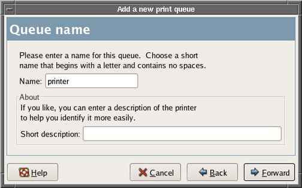
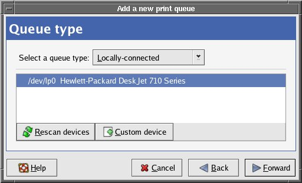

Operating Documentation
Direction 5670000, Rev# 1
Module Version 4.0, Version Date 11/17/08
Operating Documentation |
| Condition | Reference | Effectivity |
|---|---|---|
Application software running. | - | - |
Log out by clicking on [System Restart] then [OK]. The system will then reboot.
When the login screen appears, login as root password is operator. Place cursor in the background, and “right click” on the mouse.
Select Configure Printer option. The following GUI will appear, see Illustration 1.
Click on [New] to add printer to the system. See Illustration 1. A new window will appear (see Illustration 2). Click [Forward] to continue.
Illustration 2: Add a New Print Queue

At the Queue name screen, type a name for the printer (see Illustration 3). After entering the name, click [Forward] to continuė.
Illustration 3: Queue Name

Select Queue type as Networked Unix (LPD). See Illustration 4.
Select the printer type. See Illustration 5. Then Select [Forward].
Click on [Finish] to complete printer installation.
Connect local printer to the parallel port in the rear of the Linux PC.
Log out by clicking on [System Restart] then [OK]. The system will then reboot.
When the login screen appears, login as root password is operator.
Place cursor in the background, and “right click” on the mouse.
Select Configure Printer option. The GUI shown in Illustration 6 will start.
Click on [New]. A GUI will appear, see Illustration 2.
Click on [Forward]. Then enter printer name if needed and short description (see Illustration 3). Click on [Forward] again.
The “Queue Type” will now appear. If the printer is recognized by the system, it will appear. See Illustration 7.
Illustration 7: Add New Print Queue Screen

Verify that “Locally-connected” option on top is selected. Click on [Forward].
Verify that the proper printer model is selected. Click on [Forward].
If the system does not recognize the printer that is connected, select Printer Manufacturer and Model from the top screen. See Illustration 8. Then select the exact printer.
Click on [Finish]. The printer is now selected. If needed, print a test page.